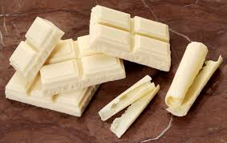
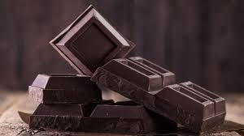

COMO SE HACE EL CHOCOLATE
¡COMO SE HACE EL CHOCOLATE BLANCO?
-
El chocolate blanco se hace con mantequilla de cacao, azúcar y leche - a veces se puede agregar vainilla natural.
El chocolate blanco debe considerarse un "verdadero" chocolate, ya que contiene manteca de cacao
COMO SE HACE EL CHOCOLATE NEGRO?

- ¿
Chocolate amargo (también llamado chocolate negro o chocolate puro) es un tipo de chocolate hecho con granos de cacao tostado sin la adición de leche. Algunas variantes permiten su uso como base para postres, pasteles y galletas.
 Página principal
Página principal